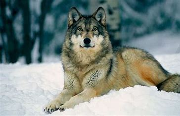
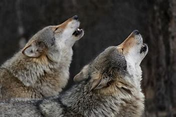

El lobo es un animal mamífero que existe desde hace miles de años en nuestro planeta, habitando lo de manera solitaria propia de su carácter único o haciendo de compañero fiel al hombre en distintos lugares y épocas a lo largo de la historia. Los lobos desde siempre, han sido capaces de adaptarse a cualquier entorno para poder habitarlo: Desde las mismísimas tundras más gélidas hasta los bosques mas frondosos pasando por praderas y llanuras de cualquier lugar que exista, dejando como excepción las montañas de las cuales no son encontrados. Se podría decir que no es un animal de montaña aunque hayas oido lo contrario pero si un ser vivo del bosque.
Pueden llegar a albergar medidas descomunales en cuanto a peso y altura. Los tamaños más comunes rondan entre los 10 cm de ancho y 12 de largo por lo que no está mal para ellos, tampoco te pienses te los lobos que salen en la famosísima serie de Juego de Tronos con esos tamaños como si se tratara de caballos iban a ser reales ni mucho menos.
Empezamos a hablar de su aspecto físico por su pelaje. El pelaje de los lobos puede variar en colores como especies que existen, desde los tonos más negros y grisaceos, hasta rojos y marrones de los cuales veremos más adelante en los tipos de lobos diferentes que existen. Se puede llegar a denominar este tipo de variación de pelaje en dos categorías para diferenciarlos correctamente: Los lobos de pelaje interno y los de pelaje externo o más ácidos como los de guardia. En relación con su cabello, suelen cambiarlo durante las estaciones de primavera e invierno, ya que para ellos son momentos idoneos dónde la temperatura climática tiene más subidas y bajadas bruscas.
Aquí tampoco nos queremos extender mucho porque es un animal que se alimenta exclusivamente de carne por lo que es un carnívoro depredador en toda regla. Desde que existen su base alimenticia es esa por lo que suelen incluir en sus dietas todo tipo de animales salvajes: Liebres, antílopes, alces, bisontes, cabras y hasta incluso si van en manada son capaces de enfrentarse a osos adultos.
La distribución geográfica de los Lobos es una de las más amplias dentro del reino animal de entre todas las especies que existen ya que los podemos encontrar desde los desiertos de Arabia, las frondosas selvas situadas en la India o en los fríos y gelidos hielos de Groenlandia. Como puedes ver los lobos habitan en diferentes ecosistemas alrededor de todo el mundo pero evidentemente no todos sino que su gran diversidad de especies diferentes dentro de la familia de los lobeznos se pueden encontrar unos u otros dependiendo de donde estés.
Un lobo salvaje en su hábitat natural puede llegar a tener una esperanza de vida de entre los 4 hasta los 8 años siempre y cuando que está se desarrolle en un ambiente digamos estable. Esto es así porque la naturaleza está llena de complicaciones y dificultad y en el caso dividir sin falta de alimento ni sin necesidad de desplazarse continuamente esa es la edad que pueden llegar a alcanzar.
Actualmente las especies de lobos están catalogadas como una preocupación menor por lo que ninguna de sus subespecies están en peligro. Sí que es cierto que a lo largo de estas últimas décadas la reducción de las manadas de lobos alrededor de todo el mundo se ha visto afectada drásticamente y eso es algo que tenemos que combatir prácticamente de forma inmediata ya que son los principales precursores de tener una estabilidad en nuestros ecosistemas sostenible y sin complicaciones. Decimos esto porque el lobo es un depredador encargado de regular los ecosistemas donde habiten y si este desaparece por completo dichos ecosistemas se desequilibran y el resto de animales en cuanto a población se refiere podrían llegar a crecer sin límite llegando a causar estragos tanto en poblaciones cercanas como el otro seres vivos.
